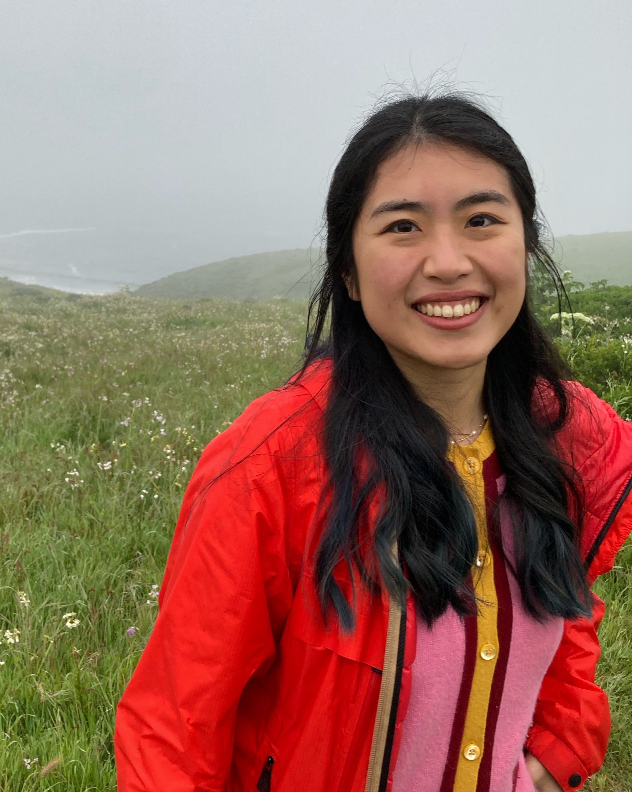

Creating data driven solutions to real problems in science using AI, machine learning, and interdisciplinary research.
View Publications
I am a PhD candidate at UC Berkeley. My PhD research focuses on searching for rare astroparticle interactions. I am passionate about creating data driven solutions to real problems in physics using AI, machine learning, and interdisciplinary research.
From 2021 to 2024, I received the American Physical Society (APS) Forum on Graduate Student Affairs Travel Award for Excellence in Graduate Research, Berkeley Connect Fellowship, and Stuart J. Freedman Memorial Fellowship.
J. Aalbers, et al. • Physical Review Letters • 2025
J. Aalbers, et al. • Physical Review Letters • 2023
S. Wandel, et al. • Science • 2022